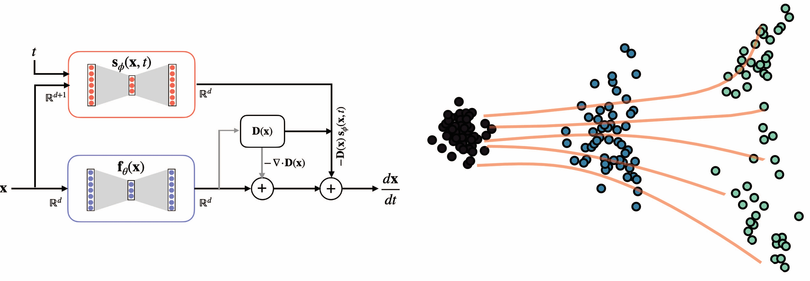

Research
Learning physically consistent differential equations from microscopy images/videos
During my Ph.D, I developed robust statistical techniques for inferring physically consistent PDEs and ODEs from noisy, limited data. I developed a new sparsity promoting algorithm called Iterative Hard Thresholding with debiasing (IHT-d) which in combination with the theory of stability selection enabled learning differential equations with minimal parameter tuning directly from microscopy videos.
Balanced multi-objective optimization with Physics-Informed Neural Networks (PINNs)
Physics-Informed Neural Networks serve as promising means to integrate physical priors based on differential equations with the universal approximation properties of neural networks to solve forward and inverse problems in physical and life-sciences.

Learning neural operators with application to inferring closure models of active fluids
Using rotationally and translationally invariant representation of second-order tensorial functions, we learn closure models that outperform classical closures. To ensure temporal stability of the inferred closures, we use a Model Predictive Control strategy and adjoint optimization to learn closures that are fast, accurate and stable.


Inferring the dominant physical mechanism driving spindle self-organization
In collaboration with experimentalist at Prof Daniel Needleman's lab, we investigated the physical basis of spindle organization in HeLa cells. Using static ultrastructural data from electron microscopy and dynamic data from light microscopy, we condition a minimal coarse-grain model to infer key materials properties of the spindle.
Inferring transcriptional flow dynamics from cross-sectional data
Leveraging recent advances in score-based generative modeling, we propose a novel strategy for bridging cross-sectional data acquired from RNAseq. Our method termed Probability Flow Inference (PFI) faithfully interpolates between the observed marginals while accommodating for general noise forms. Using biological curated models, we illustrate how an incorrect choice of noise model leads to inaccurate inference of the underlying genetic program.

Selected Papers
-
"Human Mitotic Spindles as Active Liquid Crystals: From Collective Behaviors to Discrete Filaments", Proceedings of the National Academy of Sciences (PNAS), 2026. PDF
-
"Inferring biological processes with intrinsic noise from cross-sectional data", Proceedings of the National Academy of Sciences (PNAS), 2025. PDF
-
"Learning fast, accurate, and stable closures of a kinetic theory of an active fluid", Journal of Computational Physics (JCP), 2024. PDF
-
"Stability selection enables robust learning of differential equations from limited noisy data", Proceedings of the Royal Society A, vol. 478, no. 2262, 2022. doi:https://doi.org/10.1098/rspa.2021.0916 PDF
-
"Learning physically consistent differential equation models from data using group sparsity", Physical Review E, vol. 103, no. 4, 2021. doi:https://doi.org/10.1103/PhysRevE.103.042310 PDF
-
"Inverse Dirichlet weighting enables reliable training of physics informed neural networks", Machine Learning: Science and Technology, vol. 3, no. 1, 2022. doi:10.1088/2632-2153/ac3712 PDF
-
"STENCIL-NET for equation-free forecasting from data", Nature Scientific Reports, vol. 13, no. 1, 2023. doi:https://doi.org/10.1038/s41598-023-39418-6 PDF
-
"Stochastic force inference via density estimation", NeurIPS 2023 AI for Science Workshop.